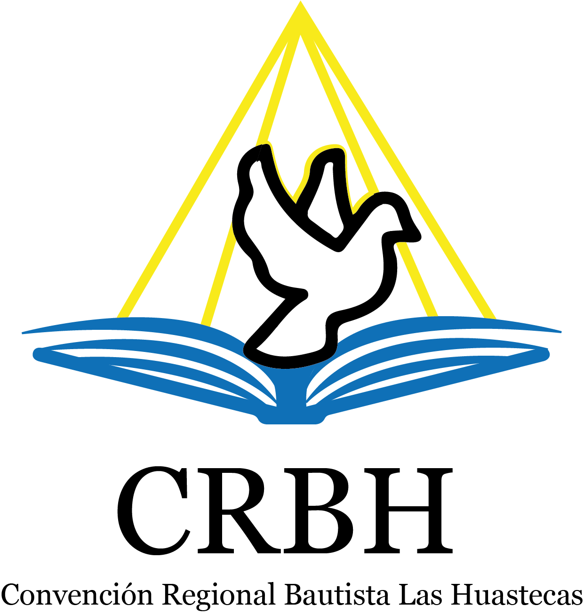
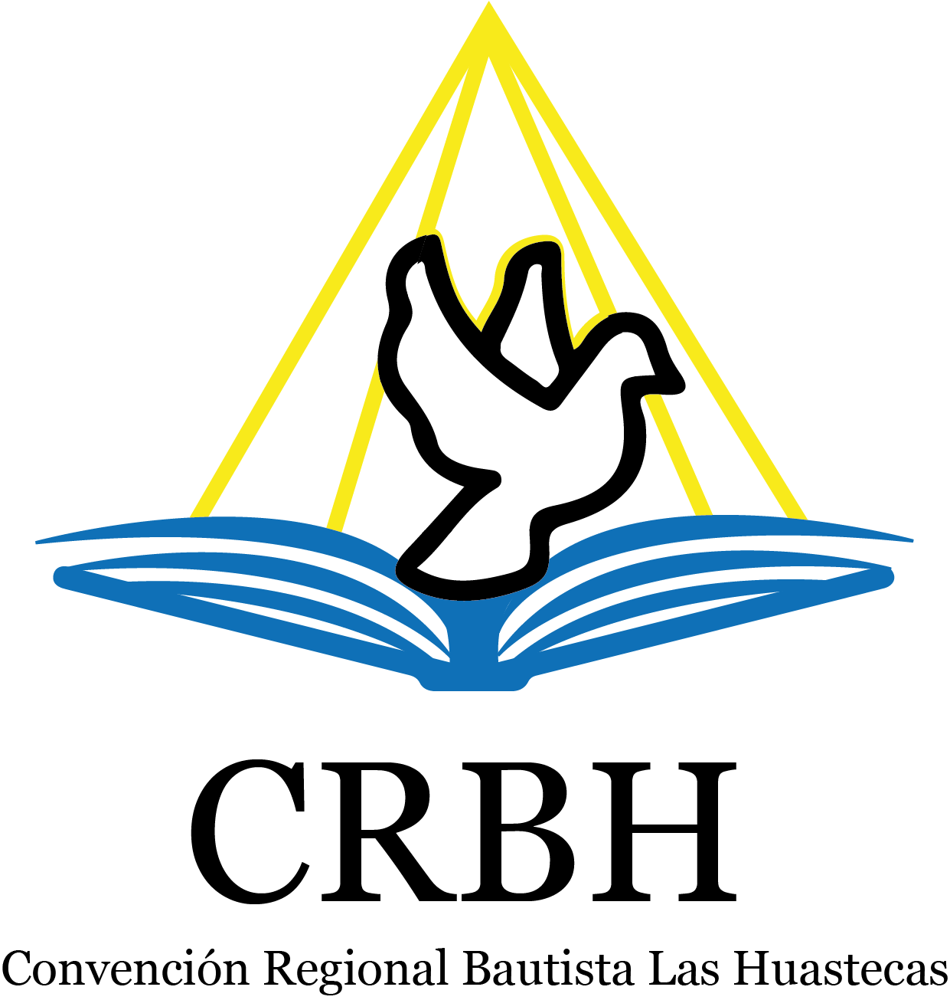
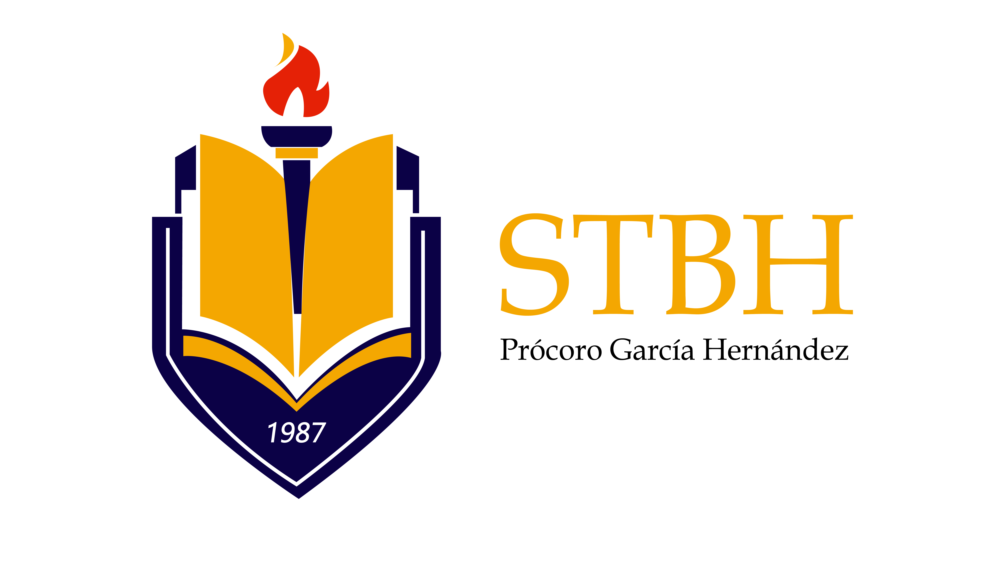
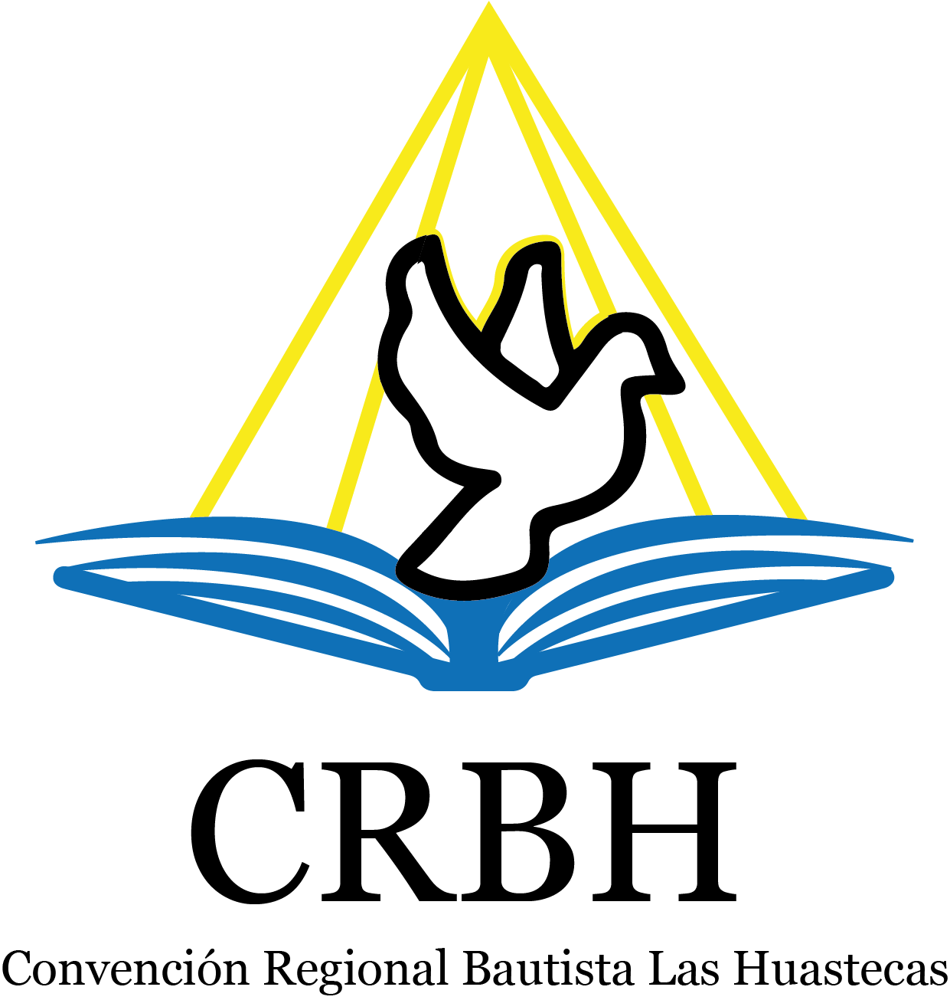
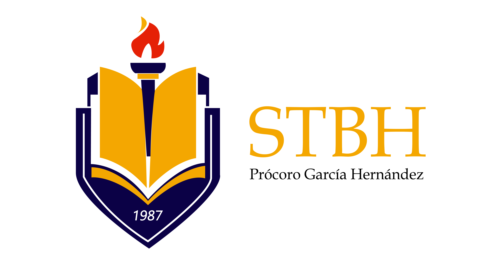
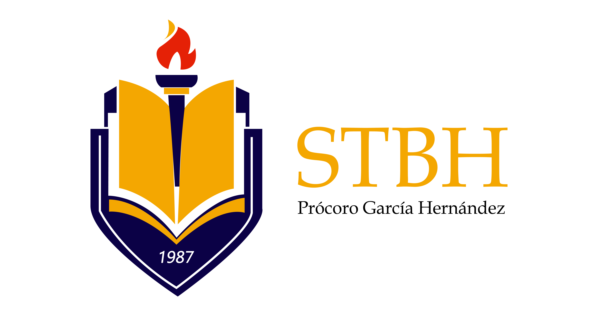
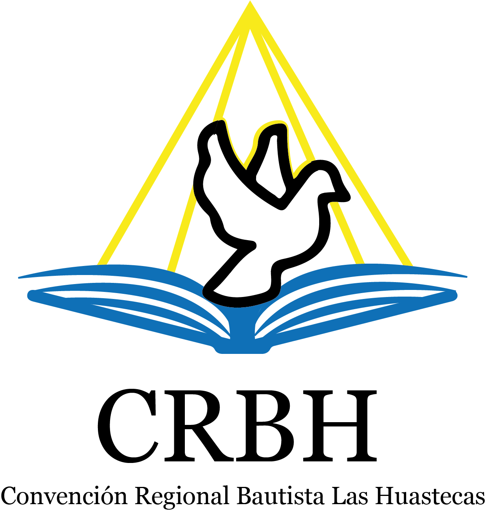
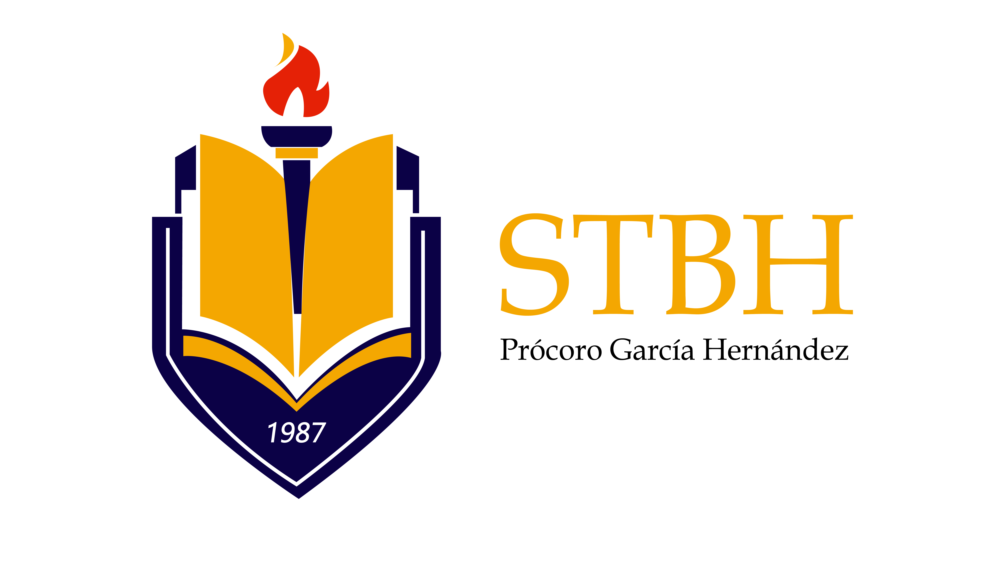

 





“Prócoro García Hernández”
Capacitando líderes para formar siervos
Somos una institución teológica comprometida con la educación y formación teórica y práctica de pastores, misioneros y obreros llamados a extender el reino de Dios.
Proveer una educación Teológica y Bíblica, que ayude a los obreros e Iglesias en su crecimiento integral ministerial.
Ser una institución altamente competitiva y saludable cuyo único fin es: la formación de siervos que sean capaces de sembrar, establecer y multiplicar iglesias.
Internado | Sabatino | Online
Inscripción: $250.00
Colegiatura Semestral: $500.00 (Básico) / $9,000.00 (Bachillerato)
Ofrenda para alimentación mensual: $300.00
Online: Inscripción anual $250.00 | Mensualidad $250.00
📍 Mesillas San Gabriel, Tantoyuca Ver. (Instalaciones del Seminario)
📞 Dir. Ranulfo Hernández Rodríguez: (789) 106 - 2342
📞 Sec. Abigaíl Acosta Castillo: (846) 102 - 9084
📧 Email: contacto@stbh.edu.mx
📱 Instagram: @stbh_pgh | Facebook: @stbhpgh.fb